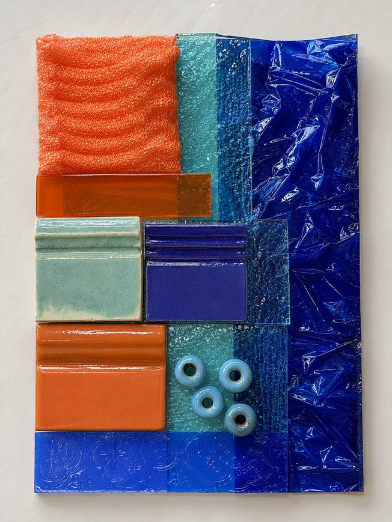
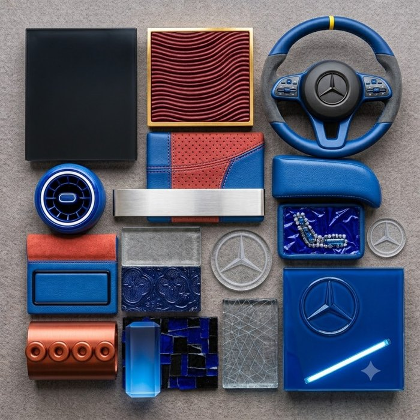
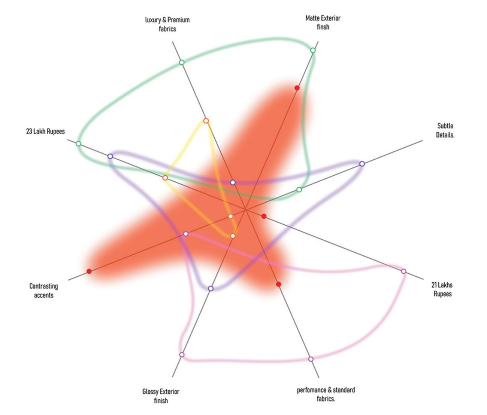
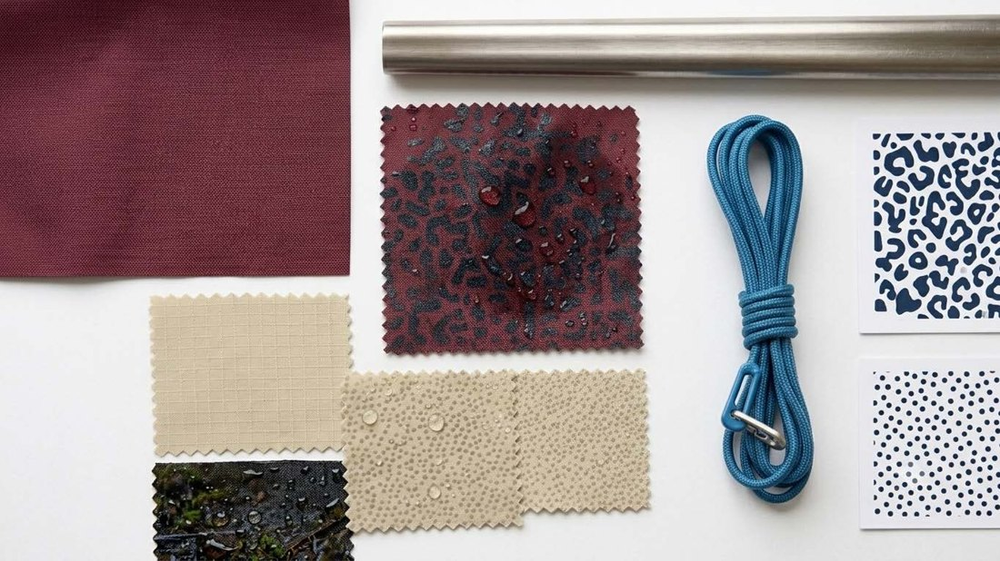
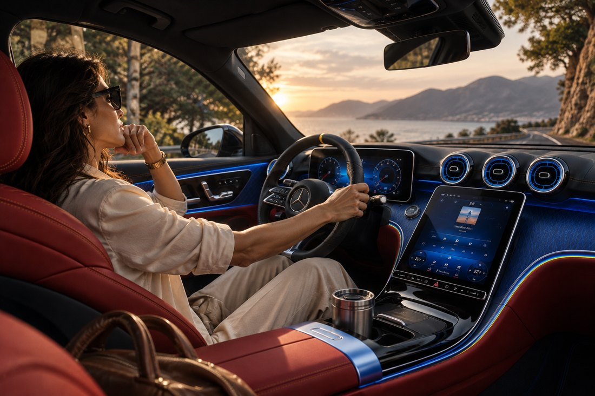

A palette is a mood. A key colour is a decision. In Design Workshop III, I taught sixteen textile design students to treat colour, material and finish as an argument they can defend to a person, a product and a maker.
Colour, material and finish are easy to treat as decoration: a pleasing palette, a list of materials, a finish named in a caption. I wanted students to treat them as a position. Every choice should trace back to a tension in the world, a specific person, and a specific product, and the sample should be able to make the case on its own.
The method adapts Futurecasting in 5 Steps, which I facilitated with design teams at Intuit, Walmart and [24]7.ai, and applies it to textile CMF.
Cover the labels. If you still get it, the work speaks through the material. If you don't, it is only talking about it.
In crit this became the silent-critique test: look at the sample for thirty seconds without reading the brief or hearing the student explain it, and write down what you think the trend is. If the guess is close, the work is doing its job.


Material board to Mercedes parts. A board of mixed materials (left) translated into a flat-lay of interior parts (right). Mercedes C-Class brief.

Where the competition sits. Five EVs plotted on finish, fabric and price, to find the gap for a distinct CMF. Mahindra XEV 9e brief.

Function decides the finish. Swatch study for a rain-reactive tent finish: grip, visibility and sleep set every colour. Decathlon tent brief.

A committed direction. Baseline audit, three directions, one final. Mercedes C-Class brief.
Students were graded on NID's five criteria. Behind them sits a six-part evidence rubric, so every grade has a stated reason. The rubric is built so that neither concept without craft nor craft without concept can score high alone.
Each student received four letter grades with a one-line basis for each, and a remark of 300 characters or fewer: one strength, one fix.
Five territories in their own language, and most briefs carried a specific persona.
At most 3 of 13 briefs showed material work made by the student. The rest stayed in rendered images.
Many briefs ended on a shortlist where the brief asked for one answer.
No generated image until a handmade swatch exists.
One key colour, in writing, by mid-course.
With a written response to feedback, so revision is built in.
A curated pack of contemporary Indian designers and artists, studied for the argument each makes, never lifted as mood-board images.
One strength, one fix, written for the individual.